Misterios de GTA 5: los 18 easter eggs y lugares secretos más llamativos
GTA V es un juego interminable que esconde un sinfín de sorpresas. Es una locura la cantidad insana de misterios que hay en GTA 5, ya sea en forma de easter eggs (huevos de pascua) o lugares secretos.
Easter eggs:
1. Alienigenas
Tal como sucede con Pie Grande, los aliens son una referencia constante en los Grand
Theft Auto. En el V podrás encontrar más de un huevo de pascua que se relaciona con
los terroríficos extraterrestres.
Primera misión del juego: en el inicio de GTA V, podrás ver el mejor easter egg
relacionado con los aliens. Cuando Michael llega al río congelado, debajo del puente, se
puede ver un Xenomorfo de la famosa franquicia de Alien. ¡Asegúrate de ir antes de
cruzar las vías del tren!
En el fondo del océano: en Paleto Bay hay una nave alienígena sumergida y cubierta con
algas acuáticas. Desafortunadamente, no podremos entrar en ella, pero es increíble
cuando la ves por primera vez. Por supuesto, sólo puedes llegar si usas un submarino.
En el cielo: tras completar la campaña principal al 100%, en Mount Chiliad hay una nave
volando y parada en el mismo lugar. Para verla necesitarás usar un rifle de precisión.
Sandy Shores: en esta zona existe un lugar de culto a los aliens. Está lleno de dibujos
dementes, pinturas y formas geométricas por todas partes. Se cree que fue creado por
hippies en los años 60.
2. Pie Grande
El Pie Grande comenzó a aparecer desde la entrega GTA San Andreas, y es una
referencia al famoso mito del BigFoot. También está presente en Grand Theft Auto 5,
aunque sólo puede ser visto durante una misión específica, llamada La última. Para
hacer esa misión, primero debes haber completado la campaña principal al 100% y dejar
pasar una semana con Franklin.
En esa misión, verás que tienes que dar caza a un ser un tanto extraño. ¡Es el Pie
Grande! Es difícil localizarlo, pero el objetivo será buscarlo con la mira térmica y
acertarle con un tiro. Tras lograrlo, lo que sucede después es algo que es mejor
experimentar por uno mismo.
Ten cuidado, pues, si lo encuentras con la mira térmica y cambias a la mira normal,
¡desaparecerá!
3. Muñeco de nieve
En La Mesa, al este de Los Santos, hay un edificio perteneciente a la empresa Fridgit. Al entrar en la finca de refrigeración, una de las puertas azules estará medio abierta. Si miras a través del hueco, podrás ver un muñeco de nieve grande detrás de las cajas. Siendo sinceros, la sonrisa que tiene es un tanto macabra e inquietante.
4. Mansión de Playboy
La Mansión de Playboy es uno de los easter eggs más llamativos del juego. Se parece
muchísimo a la versión real de Hugh Hefner, pues tiene piscina, bar, mujeres en topless
y viejos ricos. Es habitual encontrarte con una fiesta en curso, la cual puede durar por
toda la noche. De un modo un tanto peculiar, en cuanto llega el amanecer, las personas
comienzan a desaparecer.
Podrás encontrar esta mansión en Richman de Los Santos, cerca del campo de golf, al
norte de Americano Way y al oeste de West Eclipse Boulevard. ¡No tiene pérdida!
5. Red Dead Redemption y Nyan Cat
Debido a que Red Dead Redemption es de Rockstar, es normal que veamos referencias a
este juego en GTA V. Para encontrar este huevo de pascua, dirígete hacia Strawberry
Avenue, debajo de la carretera. Ahí encontrarás diversas pintadas en la pared. ¡Pon
atención a los detalles!
Conforme eches una ojeada, notarás que una de las siluetas es John Marston, el
protagonista del inolvidable Red Dead Redemption. Lo verás montado a caballo, bajo la
luna llena. Además, en el mismo lugar también podrás encontrar otro easter egg. Se
trata del Nyan Cat, el gato gris y rosa que deja un rastro de arco iris detrás de sí.
6. Cara en la montaña
Regresando una vez más a Mount Chiliad, es posible ver un rostro esculpido en la montaña. Se encuentra en la parte norte de la zona, y lo cierto es que es un tanto difícil verlo a menos que vayas en helicóptero. Para asegurarte de que estés cerca de donde aparece esta cara, ve a buscar cerca de la estación del teleférico.
7. Precipicio de la película Thelma y Louise
El primer lugar secreto que compartimos es una referencia a una película de culto en la
década de los 90. Puede que pienses que ese filme no tiene nada que ver con GTA,
¡pero tiene parecidos! Dos mujeres se escapan de la policía, viviendo unas
persecuciones de coche bastante frenéticas. Finalmente deciden saltar por un
precipicio. ¿Ese spoiler te recuerda a algo?
Precisamente Rockstar incluyó dicha escena en GTA V. Si usas cualquier tipo de
transporte y marchas a la montaña cerca de Raton Canyon, tendrás oportunidad de ver
la misma escena recreada en el juego. Para presenciar ese momento estelar, asegúrate
que sean entre las 7 y 8 de la noche en el juego.
8. Serie Lost
Si vas con un submarino a las profundidades de la costa este de San Andreas, cerca de
San Chianski Mountain Range, encontrarás The Hatch. Se trata, nada más y nada menos,
de la célebre escotilla que aparece en la serie Lost. Su propósito en el juego es todo un
misterio; de hecho, si te acercas a abrirla te morirás.
Es más, si activas el truco de invulnerabilidad, se desactivará automáticamente cuando
te aproximes. ¿Por qué será eso?
9. Un zombi más civilizado
En West Vinewood podrás encontrar el Paseo de la Fama de GTA V. Ahí podrás ver a un
muerto viviente que, sorprendentemente, no atacará a nadie. El zombi se quedará ahí,
caminando y hablando sobre diferentes temas al azar. A veces hablará sobre cerebros
que quiere comer. Por suerte, ¡no se comerá el tuyo!
Lo cierto es que, con esto de ser un zombi no agresivo, ¿acaso no recuerda a la película
"Mi novio es un zombie"?
10. Charles Manson
El asesino en serie Charles Manson tiene una pequeña referencia en GTA V. Para
encontrar el huevo de pascua, hay que ir a Vinewood Hills. En una pared encontrarás
una pintada con el número 1807 y una flecha debajo. El 18 era la cantidad de mujeres
que vivían con él, formando así la Manson Family.
En cuanto al 07, está relacionado con los asesinatos cometidos por Manson. Sumado a
esto, hay gamers que aseguran que en Vinewood Hills hay un civil con una cara similar a
Charles Manson, pero no se ha confirmado nunca.
11. El fantasma de Jolene Cranley-Evans
Este es un easter egg bien conocido por los jugadores más veteranos de GTA V. Se cuenta que, en 1978, Jolene caminaba por Mount Gordo con su marido John Cranley, también llamado como Jock. De un momento a otro, Jock empujó a su esposa. Jolene murió en el acto y su marido evadió la cárcel por falta de pruebas. Desde entonces, el fantasma de Jolene aparece sobre la zona a las 11 de la noche. Necesitarás un rifle de precisión para localizarla primero, aunque puedes intentar acercarte. En cuanto desaparezca, en una roca habrá escrito en sangre el nombre "Jock". Además, podrás escuchar ruidos y gritos escalofriantes. Curiosamente, este caso es una referencia a un suceso real que ocurrió precisamente en Gordon, Pennsylvania.
12. Regreso al futuro
Rockstar es una compañía que se considera fan del cine. Por esa razón, no es de extrañar que también hayan incluido referencias a las películas de la franquicia Regreso al futuro. Aunque en GTA V no encontraremos la hoverboard de Marty o el DeLorean, sí existen otros huevos de pascua. Los Gigawatts: estos son un tipo de voltaje que Doc descubre en las películas, siendo la manera de viajar en el tiempo. Es muy fácil encontrarlos en el juego, pues basta con echar un vistazo en las cajas de electricidad que hay en las carreteras. Chaleco de Marty McFly: controlando a Michael, puedes ir a una tienda de Suburban y comprar un chaleco naranja idéntico al que usa Marty en las películas. Hill Valley: ese es el nombre de la ciudad ficticia de las películas. Se puede encontrar una placa con el nombre en Pacific Buffs, cerca del cementerio. 88 MPH: esa es la velocidad exacta que el DeLorean debe alcanzar para viajar en el tiempo. Hay una nota en la casa de Lester Crest, en donde sale escrito la cifra 88 MPH y un dibujo del DeLorean.
13. El Asesino del Infinito
Merle Abrahams, conocido como Infinity Killer, es mencionado en distintas ocasiones de GTA 5. Resulta que mató a ocho personas y lanzó los cuerpos al fondo del mar. A lo largo del juego, podrás hallar referencias y pistas sobre el paradero de las víctimas. Por ejemplo, en Blaine County de Sandy Shores encontrarás un buen puñado de notas y frases escondidas. Cerca hallarás un poema un tanto aterrador. En Yellow Jack Inn podrás ver rastros de sangre relacionados con Abrahams. Pero la guinda del pastel está en la Penitenciaria de Bolingbroke, donde hay una pintada que nos da una pista sobre el paradero de los cuerpos. Como puedes ver en la imagen, las víctimas se pueden encontrar en unas islas cerca de Mount Chiliad, al norte de Paleto Bay.
14. No Country for Old Men
Quien vio esta película reconocerá muy bien la representación de una de sus escenas. En el lado oeste de Mount Chiliad, puedes presenciar una negociación fallida entre narcotraficantes. Hay unos cuantos vehículos y hombres abatidos tirados por el suelo. Si exploras un poco, encontrarás una persona viva que te pedirá que no tomes el maletín con dinero. Tal como sucede la película, si decides tomar el maletín, serás perseguido por otros criminales. Si sales bien parado, ¡sumarás mucho dinero a tu cuenta!
15. Cabaña de Jesco White
Esta es una localización que sólo está disponible en el modo un jugador. Para encontrar la cabaña, busca por el norte de Alamo Pier, saliendo de North Calafia Way. Cuando llegues al destino, verás a Jesco White haciendo su baile típico. Se trata de un artista real que presta su voz en una de las emisoras de GTA V.
16. Referencia a Max Payne 3
Si juegas con Michael y entras en la tienda de Suburban, una de las ropas que puedes adquirir es la camisa hawaiana que usa Max Payne en la tercera entrega de la franquicia. Pero ahí no terminan las similitudes. Si le pones gafas de aviador y vas al peluquero para que Michael se quede calvo y tenga barba y bigote, ¡se verá casi igual que el protagonista de Max Payne 3!
17. Walter White
Es innegable que el Chef de GTA V es una referencia clara a Walter White de la serie Breaking Bad. Ambos cocinan metanfetaminas y poseen cierto parecido físico, salvando algunas distancias. No sólo eso: también se dice que puedes lograr que Michael tenga una apariencia similar a Walter White.
18. Niko Bellic
El protagonista de la anterior entrega, Grand Theft Auto IV, nos digna con su aparición en distintos momentos del juego. Por ejemplo, en Senora Road existe un póster que muestra la cada de Niko Bellic. En el modo campaña, se puede ver a James De Santa metiéndose en LifeInvader, mostrándose el perfil de Niko Bellic.
Trucos/Codigos para vehiculos y mas ventajas
Vehiculo |
Truco |
Codigo desde el movil |
|---|---|---|
Avión de acrobacias (Mallard Stunt Plane) |
Círculo, Derecha, L1, L2, Izquierda, R1, L1, L1, Izquierda, Izquierda, X, Triángulo |
1-999-2276-78676 |
Avión fumigador (Duster) |
Derecha, Izquierda, R1, R1, R1, Izquierda, Triángulo, Triángulo, X, Círculo, L1, L1 |
1-999-359-77729 |
Bicicleta (BMX) |
Izquierda, Izquierda, Derecha, Derecha, Izquierda, Derecha, Cuadrado, Círculo, Triángulo, R1, R2 |
1-999-226-348 |
Camión de la basura (Trashmaster) |
Círculo, L1, Izquierda, R1, L2, X, R1, L1, Círculo, X |
1-999-4653-46-1 |
Coche a prueba de balas Duke o' death |
No tiene |
Una vez completado el evento aleatorio Duelo, puedes introducir este código en el teléfono para sacar el coche: 1-999-3328-4227 |
Coche de carreras Rapid GT |
R2, L1, Círculo, Derecha, L1, R1, Derecha, Izquierda, Círculo, R2 |
1-999-727-4348 |
Coche deportivo Plister Comet |
R1, Círculo, R2, Derecha, L1, L2, X, X, Cuadrado, R1 |
1-999-266-38 |
Helicóptero de combate (Buzzard) |
Círculo, Círculo, L1, Círculo, Círculo, Círculo, L1, L2, R1, Triángulo, Círculo, Triángulo |
1-999-289-9633 |
Hidroavión (Dodo) |
No tiene |
En este caso debes introducir el siguiente código en el teléfono tras haber completado un evento aleatorio llamado Hidroavión: 1-999-3984628 |
Limusina |
R2, Derecha, L2, Izquierda, Izquierda, R1, L1, Círculo, Derecha |
1-999-846-39663 |
Motocicleta de motocross Sánchez |
Círculo, X, L1, Círculo, Círculo, L1, Círculo, R1, R2, L2, L1, L1 |
1-999-633-7623 |
Motocicleta PCJ-600 |
R1, Derecha, Izquierda, Derecha, R2, Izquierda, Derecha, Cuadrado, Derecha, L2, L1, L1 |
1-999-762-538 |
Paracaídas |
izquierda, Derecha, L1, L2, R1, R2, R2, Izquierda, Izquierda, Derecha, L1 |
1-999-759-3483 |
Submarino Kraken |
No tiene |
Tras completar el desafío de fotografía de los 20 animales, puedes introducir este código en el móvil para invocar al submarino Kraken:1-999-2822537 |
Trucos de salud y armadura
Mejora |
Truco |
Codigo desde el movil |
|---|---|---|
SALUD Y ARMADURA AL MÁXIMO |
Círculo, L1, Triángulo, R2, X, Cuadrado, Círculo, Derecha, Cuadrado, L1, L1, L1 |
1-999-887-853 |
INVENCIBILIDAD (DURANTE 5 MINUTOS) |
Derecha, X, Derecha, Izquierda, Derecha, R1, Derecha, Izquierda, X, Triángulo |
1-999-724-654-5537 |
Todas las armas y munición
Mejora |
Truco |
Codigo desde el movil |
|---|---|---|
Balas explosivas |
Derecha, cuadrado, X, Izquierda, R1, R2, Izquierda, Derecha, Derecha, L1, L1, L1 |
1-999-444-439 |
Balas de fuego |
L1, R1, Cuadrado, R1, Izquierda, R2, R1, Izquierda, Cuadrado, Derecha, L1, L1 |
1-999-462-363-4279 |
Desbloquear todas las armas + munición extra |
Triángulo, R2, Izquierda, L1, X, Derecha, Triángulo, Abajo, Cuadrado, L1, L1, L1 |
1-999-8665-87 |
Integrantes
(Dar click en cada nombre para ver los trabajos)
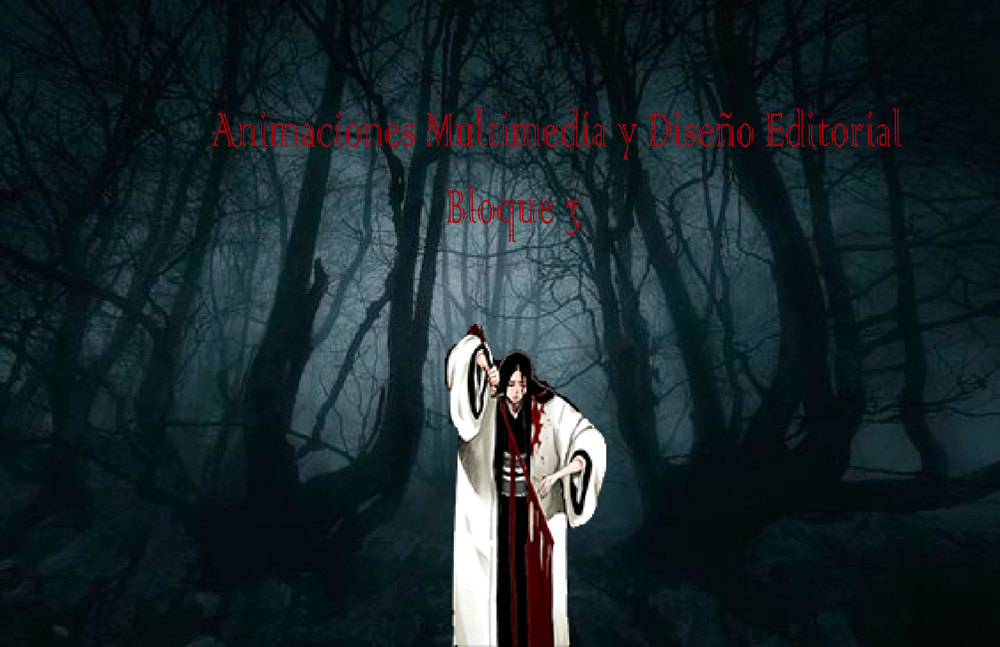_ 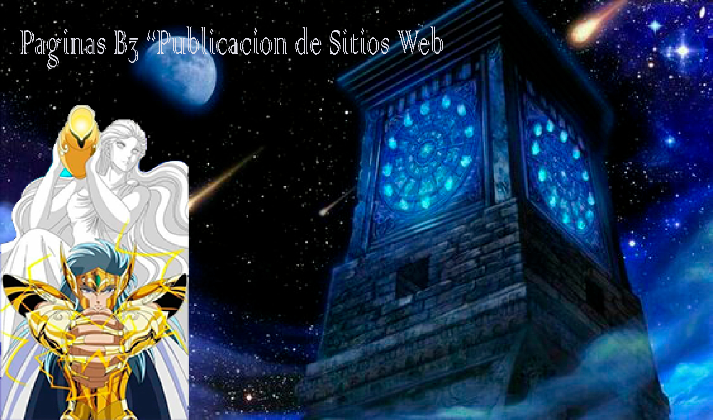
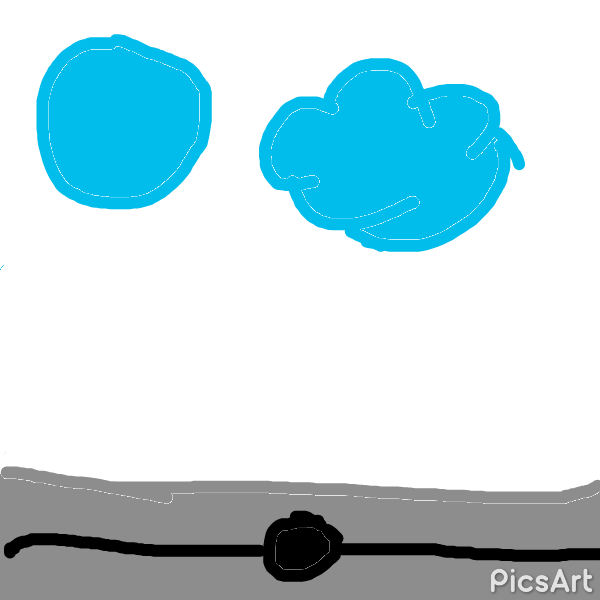
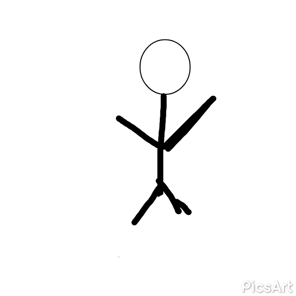_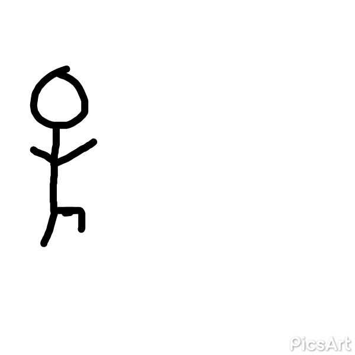

 _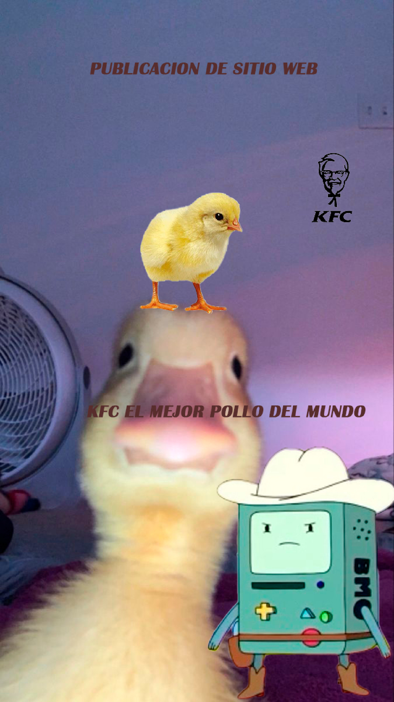
_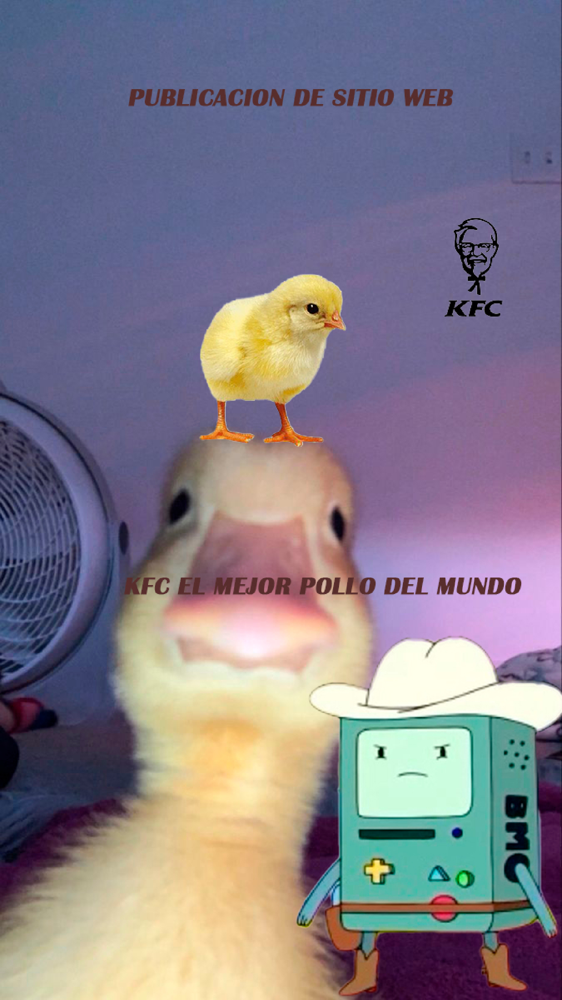
_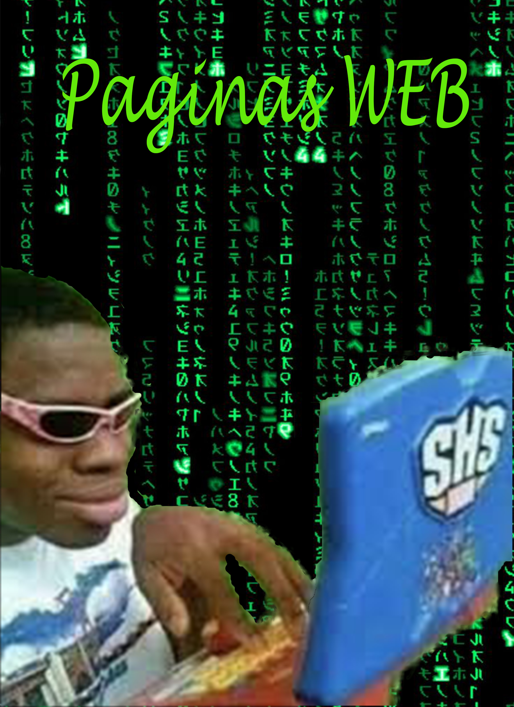
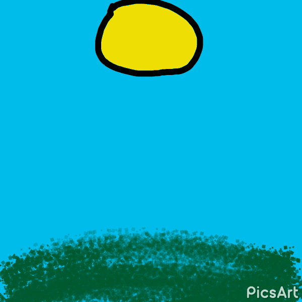
_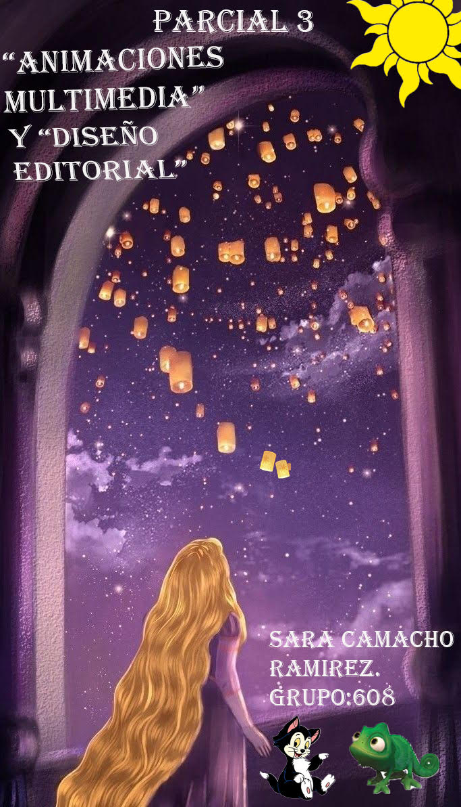
_
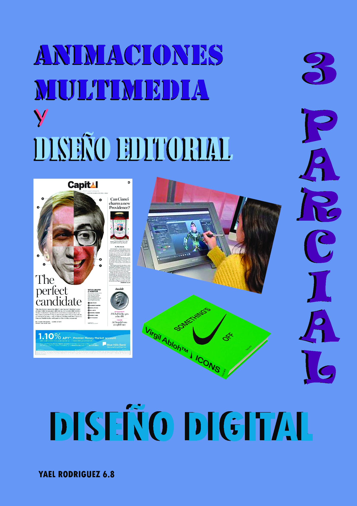_
.gif)
(1).gif)